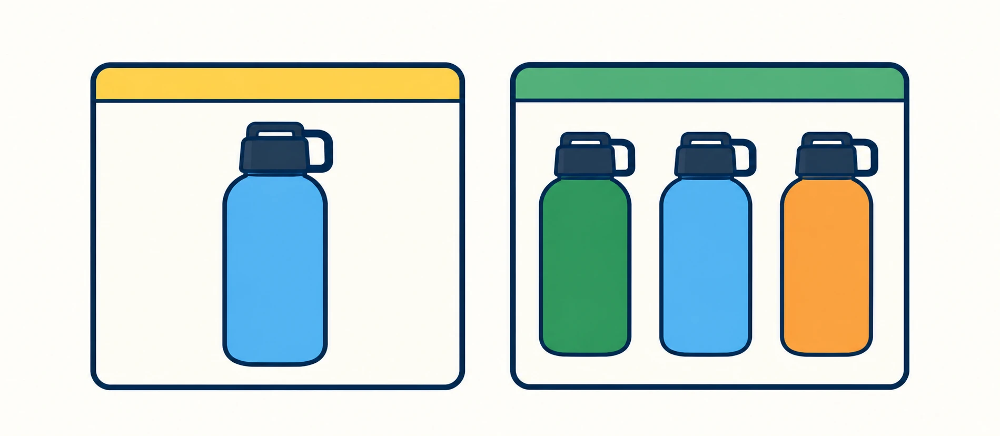
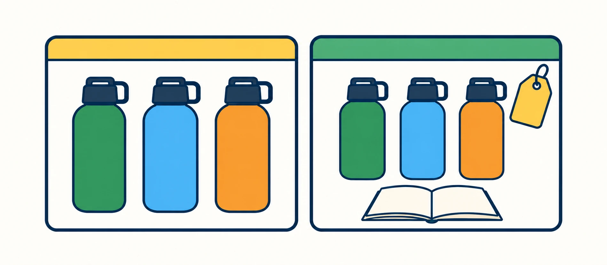

A Shopify collection can be more than a shelf of products.
When a collection represents something people genuinely shop for, it can become a useful destination in its own right. The key is making sure the collection aligns with real search intent and gives shoppers a meaningful reason to browse.
1. Start with the shopper, not the tag.
Your product tags are useful internally, but they do not automatically tell you whether someone would actually look for a group of products using that idea.
The better question is: would a shopper reasonably search for this?
| Internal label | Potential shopper intent |
|---|---|
| green | Weak by itself |
| linen | Potentially useful |
| summer | Vague |
| linen-shirts | Clearer |
| linen-shirts-hot-weather | Very specific intent |
Internal catalog
- Tags
- e.g. green, linen, summer
- Product types
- e.g. shirts, bottles, shoes
- Collections
- e.g. all products, sale
Shopper search intent
hiking water bottles
- Real search demand
- Clear intent
- Multiple relevant products
Useful landing page
Hiking Water Bottles
Internal catalog labels can evolve into useful collection pages when they match real search intent.
2. A good collection solves a browsing problem.
A product page helps someone evaluate one item. A collection helps someone choose among several relevant items.
That means a collection deserves to exist when the shopper reasonably needs comparison.

One exact item
The search points to a specific product.
Search: 32 oz blue insulated bottle with straw
Destination: Product page — 32 oz Insulated Water Bottle
Several relevant options
The search suggests a range of products.
Search: water bottles for hiking
Destination: Collection page
3. The collection needs enough products to be useful.
There is no magic product-count rule. The better test is whether the page gives the shopper a meaningful choice.
4. Add context, not just a product grid.
A bare collection tells a shopper what products are present. A useful landing page also explains what belongs there, who the collection is for, and how to narrow the choice.

Bare collection
Hiking Water Bottles
Just a product grid.
Useful landing page
Hiking Water Bottles
Lightweight and insulated bottles designed for carrying on day hikes and longer trips.
Shop by: Capacity · Lid style · Material
Helpful content: How to choose a hiking bottle
Context, filters, and helpful content.
5. The collection title should describe the shopping destination.
A product title describes one item. A collection title describes the group.
Use the rest of the page to provide the additional context instead of forcing every useful phrase into the title.
6. Collection copy should answer “why this group?”
You do not need a wall of text above the product grid. A useful introduction can quickly explain what the collection contains, who it is for, and what makes the products belong together.
Our hiking water bottles are selected for portability, durability, and easy drinking on the move. Compare insulated and lightweight options across several capacities and lid styles.
7. Collections, filters, and product pages do different jobs.
Not every attribute needs its own collection. Some details are more useful as filters, while highly specific searches may belong directly on a product page.
Collection page
For meaningful categories or use cases where shoppers need to compare several products.
- Running Shoes
- Hiking Water Bottles
- Linen Shirts
- Gifts for Dad
Filter
For narrowing within a collection without creating another standalone page.
- Size
- Price range
- Color
- Material
- Brand
Product page
For a specific item when the search points directly to one product or variant.
- 32 oz insulated bottle with straw
- Men’s linen shirt in green
- Trail shoe size 10
8. Internal links turn the collection into part of a larger path.
A useful collection does not need to live on an island. Articles can link into collections. Collections can link to buying guides. Product pages can link back to relevant collections.
9. Know when not to create the collection.
- Only one product genuinely fits.
- The grouping exists only for internal operations.
- Another page already serves the same intent.
- The collection would duplicate another destination.
- There is no meaningful shopper reason to browse it.
- The combination exists only because you can generate it.
Where penstack fits in
penstack can use product, collection, structured product details, Brand Voice, and search context together when generating content.
The important decision still belongs to you: does this grouping deserve to become a customer-facing destination?
penstack can help with the content. The merchandising judgment stays with the person who knows the catalog.
The takeaway
Internal structure organizes your catalog. Public structure helps customers navigate it. The strongest collection pages align catalog logic, shopper intent, and useful context.
Turn catalog context into clearer product content.
Keep product context, collection context, Brand Voice, review, and publishing connected in penstack.